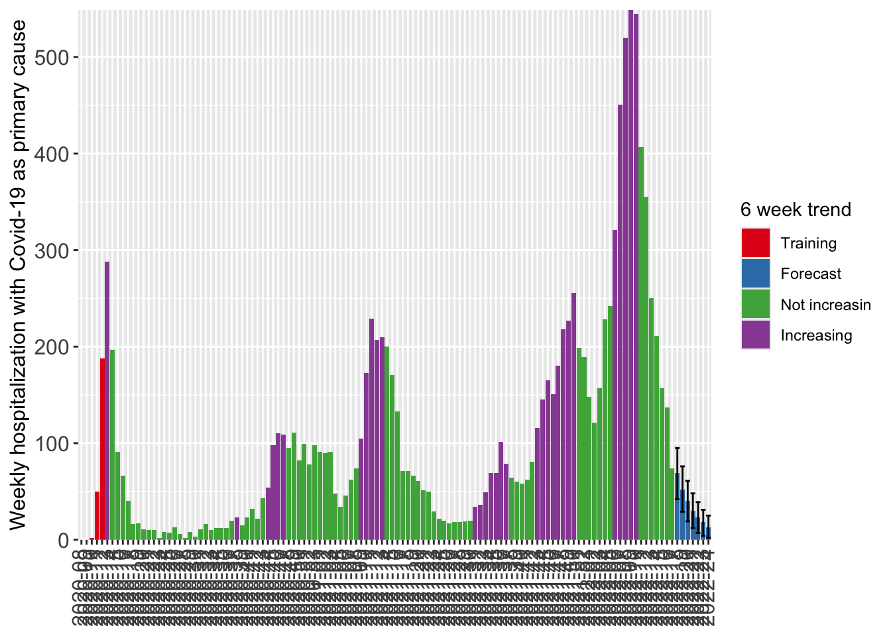

Code
library(ggplot2)
library(data.table)
library(magrittr)
d_hosp <- cstidy::nor_covid19_icu_and_hospitalization_csfmt_rts_v1
# take daily data
d_hosp_weekly <- d_hosp[granularity_time=="isoyearweek"]
# compute short term trend
res <- csalert::short_term_trend(
d_hosp_weekly,
numerator = "hospitalization_with_covid19_as_primary_cause_n",
trend_isoyearweeks = 6,
remove_last_isoyearweeks = 1
)
# create the trend label
res[, hospitalization_with_covid19_as_primary_cause_trend0_41_status := factor(
hospitalization_with_covid19_as_primary_cause_trend0_41_status,
levels = c("training","forecast","notincreasing", "increasing"),
labels = c("Training","Forecast","Not increasin", "Increasing")
)]
# check some columns
# res[
# ,
# .(
# date,
# hospitalization_with_covid19_as_primary_cause_n,
# hospitalization_with_covid19_as_primary_cause_forecasted_n,
# hospitalization_with_covid19_as_primary_cause_trend0_41_status
# )
# ]
# res$isoyearweek
# visualize ----
q <- ggplot(
res,
aes(
x = isoyearweek,
y = hospitalization_with_covid19_as_primary_cause_forecasted_n,
group = 1
)
)
q <- q + geom_col(mapping = aes(fill = hospitalization_with_covid19_as_primary_cause_trend0_41_status))
q <- q + geom_errorbar(
mapping = aes(
ymin = hospitalization_with_covid19_as_primary_cause_forecasted_predinterval_q02x5_n,
ymax = hospitalization_with_covid19_as_primary_cause_forecasted_predinterval_q97x5_n
)
)
q <- q + theme(
axis.text = element_text(size = 12),
axis.title = element_text(size = 12),
plot.title = element_text(size = 15),
axis.text.x = element_text(angle = 90, vjust = 0.4, hjust = 0.4),
axis.title.x = element_blank()
)
q <- q + scale_y_continuous("Weekly hospitalization with Covid-19 as primary cause", expand = c(0, 0.1))
q <- q + scale_x_discrete("Isoyearweek")
q <- q + expand_limits(y=0)
q <- q + scale_fill_brewer("6 week trend", palette = "Set1")
q